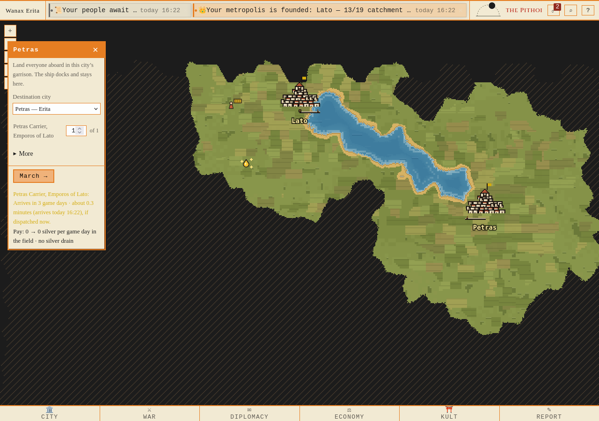
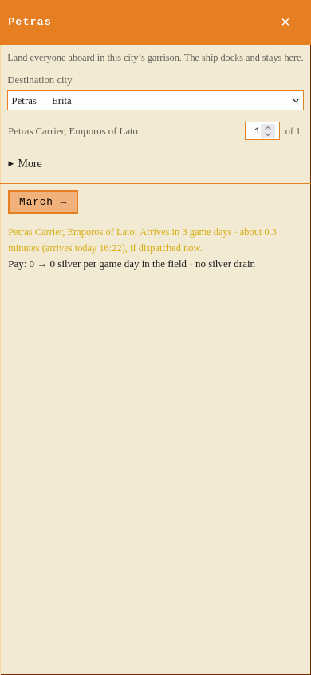
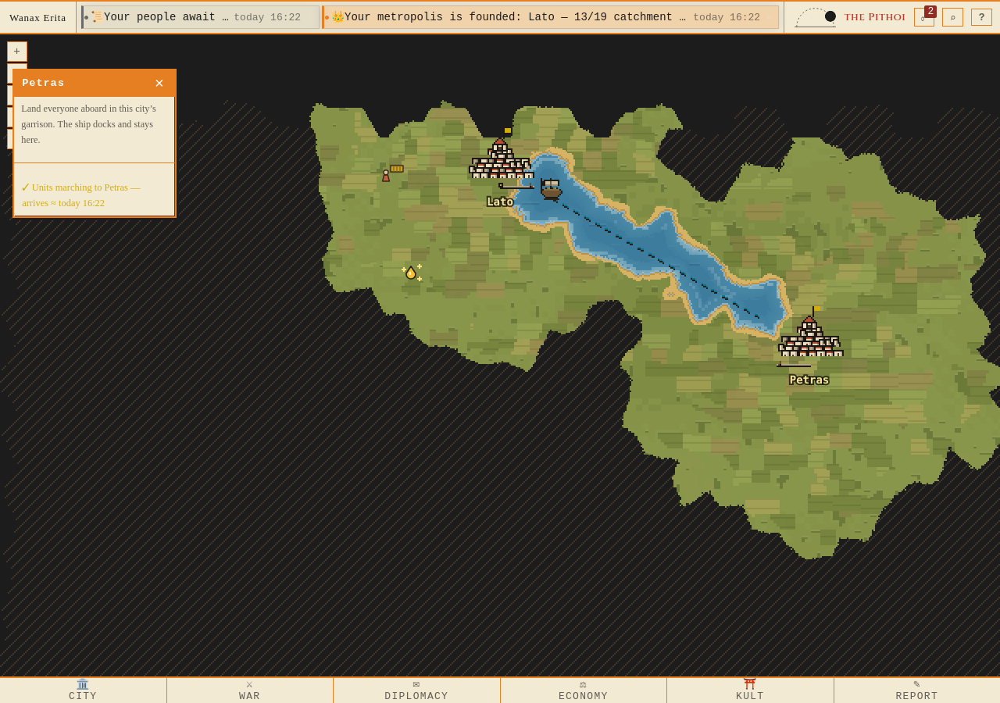
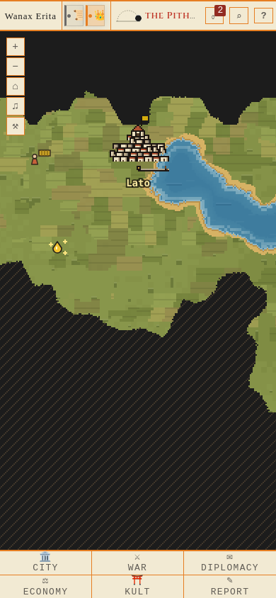
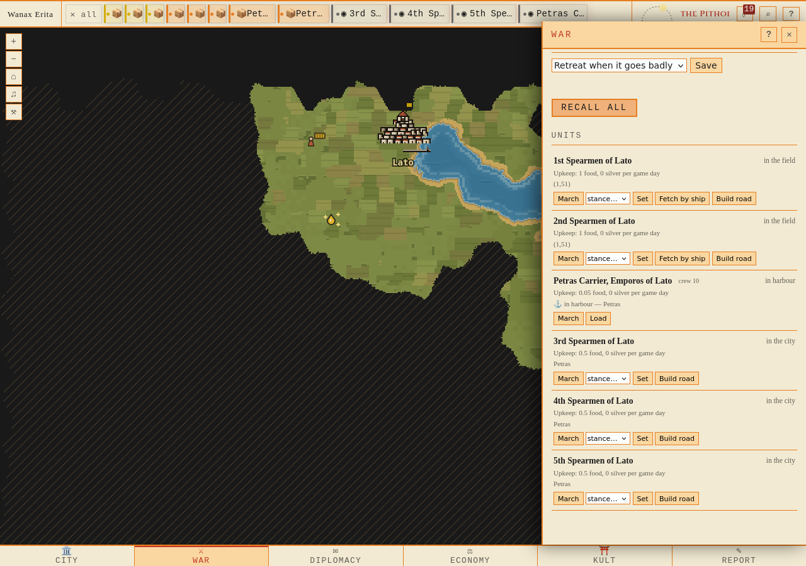
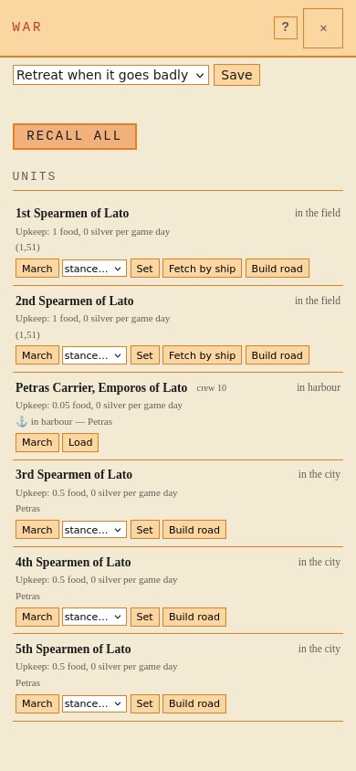

Native Firefox1280/390. Rapport · Proveniens. Tomt skepp kan välja egen hamnstad. Lastat Emporos tar tre kohorter dit i en order; alla går i garnison, skeppet stannar och stödstaden behålls.





